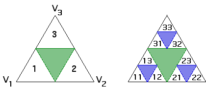

| 2. (ii) Suppose P1 lies in the largest removed triangle, hence inside the equilateral triangle S having vertices V1, V2, and V3. |
|  |
| Denote by T1, T2, and T3 the IFS rules equivalent to the rules of problem 1. |
| Then P2 = T1(P1), or P2 = T2(P1), or P2 = T3(P1), depending on the corner selected. |
| Consequently, P2 lies in one of the equilateral triangles T1(S), T2(S), and T3(S), labeled 1, 2, and 3 on the left above. |
| Say P2 = Ti(P1). |
| Note the three blue triangles on the right are T1, T2, and T3 of the green triangle, so P2 lies in one of the blue triangles. |
| Next, P3 = Tj(P2) = Tj(Ti(P1)), so
P3 lies in one of the nine triangles |
| All subsequent Pn = |
| Continuing in the obvious way shows each stage of removed triangles contains exactly one of the Pi. |
Return to Exercises.